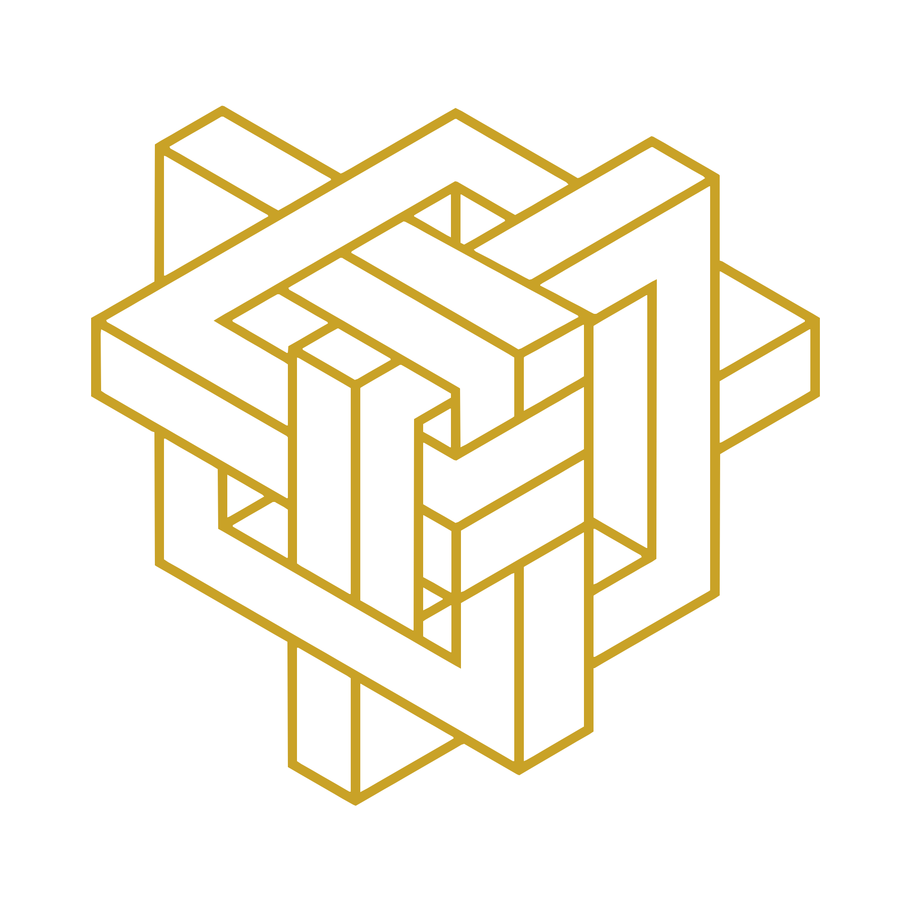

Paham Rahasia Terhindar dari Cowo Patriarki, Munafik, dan NPD Padahal dari luar keliatannya kayak cowo idaman banget
Cowo yang keliatannya baik banget, belum tentu green flag:
- Keliatannya taat agama, ternyata judgemental, suka jadi polisi moral, dan punya banyak sisi gelap
- Keliatannya punya mental provider, ternyata karena egonya tinggi dan ga mau terlihat vulnerable
- Keliatannya berjiwa pemimpin, ternyata patriarki dan controlling
- Keliatannya percaya diri dan charming, ternyata deep down egonya rapuh dan tukang manipulasi (karakteristik NPD)
- Keliatannya alim, tapi diem-diem nafsunya ke cewe lain
Ini BUKAN karena kamu kurang beruntung.
Ada hal-hal yang ga pernah diajarin ke kamu, dan semuanya bisa dipelajarin.
Masalahnya bukan di nasib. Ada 3 hal yang ga pernah dibahas ke kamu.
- 1. Cowo yang keliatannya baik bisa nyimpen sisi gelap yang dia sendiri belum sadarin.
Banyak cowo dibesarin sama doktrin dan kultur, misalnya "cari cewe baik-baik, jangan yang sexy-sexy". Hasilnya bisa muncul sebagai sisi gelap (shadow) yang ga keliatan di awal. Misal, cowo yang agamis banget, tapi diem-diem nafsunya ke cewe yang beda dari "cewe baik-baik". - 2. Baca flag itu ga sesimpel hitam-putih.
Satu kejadian bukan alasan buat nge-cap dia. Yang penting itu polanya, dan ada yellow flag di antara red dan green. Misal, dia menghindar tiap ada obrolan berat, dan polanya keulang. - 3. Ada pola di diri kamu sendiri yang belum kamu sadarin.
Kenapa tipe yang sama terus yang nyantol? Kalo ini ga dibongkar, kamu bisa ganti orang sepuluh kali, tapi ceritanya tetep sama.
Kabar baiknya: tiga-tiganya bisa dipelajarin. Dan itu yang gw susun di Love, Not Luck.
Kenalin: Love, Not Luck
Program buat cewe yang mau bisa baca cowo sebelum terlanjur sayang dan ga salah pilih lagi, tanpa harus jadi orang lain atau nunggu keberuntungan. [tagline final belum diputusin]
Yang bikin Love, Not Luck beda:
- Isi kepala cowo, dari cowo, tanpa filter. Gw bakal ceritain hal-hal yang cowo jarang mau ngaku, bahkan ke dirinya sendiri.
- Ga cuma tau red flag, tapi baca yellow flag dan pola. Kamu belajar bedain yang beneran bahaya dari yang lagi belajar, dan nyadarin pola kamu sendiri.
- Psikologi & filosofi yang grounded, bukan pop psychology. Love, Not Luck ini bukan untuk "menjilat ego", tapi apa yang beneran works bakal dibongkar di sini, walau ga semuanya "nyaman" pas kamu pahami.
Setelah Love, Not Luck, kamu bakal bisa:
Ngerti sisi gelap cowo yang keliatannya baik
- Ngerti kenapa dia begitu (doktrin, kultur, shadow), tanpa langsung nge-judge
- [NPD: kenal pola narsistik yang bisa diamati. Nunggu materi dicek ke sumber, dan wajib ada disclaimer: NPD itu diagnosis klinis]
Baca red, yellow, dan green flag
- Bedain fakta vs interpretasi pas baca sikap cowo
- Liat pola: kabur dari hard convo, DARVO, kasar sebagai alarm
- Bedain yang beneran bahaya dari yang lagi belajar
Kenal diri
- Tau standar kamu kebentuk dari mana
- Kenal gaya kelekatan kamu (attachment style) dan projection
- Sadar kenapa tipe yang sama terus yang nyantol
Healthy boundaries: berani udahan
- Tau kapan harus berhenti dan gimana caranya, tanpa nyalahin diri sendiri
Workbook
- Latihan dan refleksi di tiap topik, biar praktik, bukan cuma ngerti
Jadwal rilis: 10 Desember 2026 [format: berapa modul/video per topik, bentuk workbook = ___]
Bayangin kamu beberapa bulan dari sekarang.
Sekarang: kamu bisa bedain mana yang beneran tertarik, mana yang cuma jago di awal.
Sekarang: kamu sadar polanya sebelum ceritanya keulang.
Sekarang: kamu bisa liat tanda-tanda yang beda dari tampilan luarnya, sebelum terlanjur sayang.
Sekarang: kamu tau kapan harus berhenti, dan berani udahan.
Sekarang: pas ada yang serius, kamu milih dia karena dia emang tepat.
Gw ga bisa janji dia ga bakal nyakitin kamu, karena orang lain yang ikut nentuin. Yang bisa gw janjiin: kamu bakal punya cara baca cowo yang lebih tajam, kenal pola diri kamu sendiri, dan tau kapan harus berhenti.
Belajar dari kasus nyata
[Studi kasus 1: tokoh atau kasus nyata, pola yang kelihatan, pelajarannya. Dicek ke sumber dulu.]
[Studi kasus 2: sama, pola beda.]
Ini studi kasus, bukan testimoni. Testimoni asli dari pembeli baru ditaruh di sini kalo udah ada dan orangnya kasih izin.
Love, Not Luck buat kamu, kalo:
- Kamu capek ketemu cowo yang ujung-ujungnya salah, dan mau tau kenapa polanya keulang.
- Kamu pengen ngerti cowo dari sudut pandang cowo, bukan dari asumsi.
- Kamu siap jujur ngeliat diri sendiri juga, bukan cuma nyari salah di orang lain.
Mending jangan beli kalo:
- Kamu nyari trik untuk manipulasi cowo, yang mungkin bisa works, tapi cepet atau lambat bakal jadi "bom waktu" aja.
- Kamu belum siap denger hal yang "agak nusuk", tapi justru baik buat kamu.
- Kamu cuma mau denger kalo semua salahnya ada di cowo.
Yang kamu dapet hari ini
- Sisi gelap cowo yang keliatannya baik · [HARGA: ___] [FORMAT: ___]
- Baca red, yellow, green flag · [HARGA: ___] [FORMAT: ___]
- Kenal diri · [HARGA: ___] [FORMAT: ___]
- Healthy boundaries: berani udahan · [HARGA: ___] [FORMAT: ___]
- Workbook latihan dan refleksi · [HARGA: ___] [FORMAT: ___]
Total nilai: [TOTAL dihitung dari harga per item]
Harga normal: Rp297.000
Harga peserta webinar (kuota terbatas):
Kode diumumin satu-satu pas webinar. Pre-order berlaku sampai 10 Desember 2026.
Ambil Love, Not Luck sekarangKamu punya dua pilihan sekarang.
Tetep pake cara yang sama, terus berharap kali ini hokinya beda.
Atau mulai ngerti apa yang sebenernya lagi terjadi, dan pilih dengan sadar.
Ambil Love, Not Luck sekarangPertanyaan yang sering muncul
Materinya bentuknya apa?
Video materi + workbook buat latihan dan refleksi. Bisa ditonton kapan aja, sesuai waktu dan jadwal kamu. Semuanya bisa kamu buka lewat link khusus pembeli, dari HP maupun laptop. [format modul: ___]
Kapan materinya dikirim?
Materinya rilis 10 Desember 2026. Kamu bakal dapet kabar lewat grup WhatsApp khusus pembeli setiap ada materi baru.
Cowo boleh ikut?
Program ini dibuat untuk cewe. Jalur buat cowo bakal disiapin terpisah.
Kalo udah punya pacar, masih relevan?
Sebagian besar isinya soal baca flag, kenal pola diri sendiri, dan healthy boundaries, yang bakal berpengaruh juga ke gimana kamu jalanin relasi sampai ke depannya.
Kalo pre-order-nya batal gimana?
Uang kamu balik 100%.